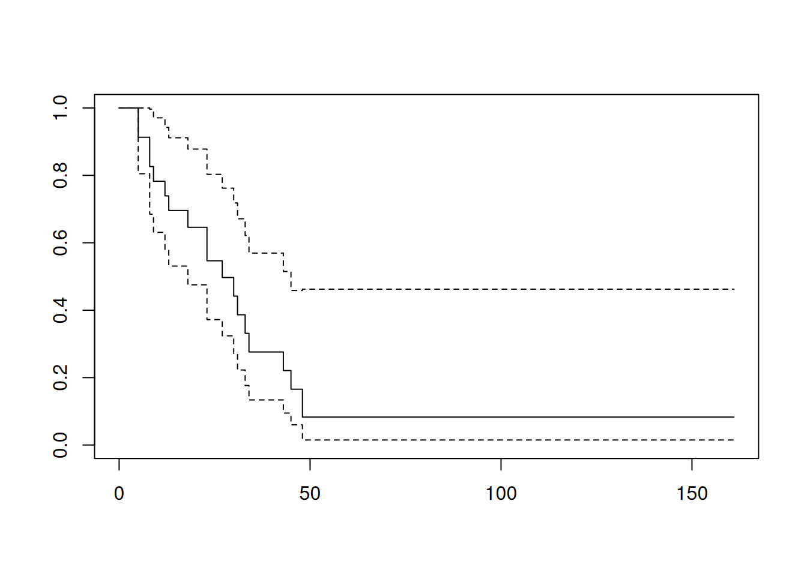
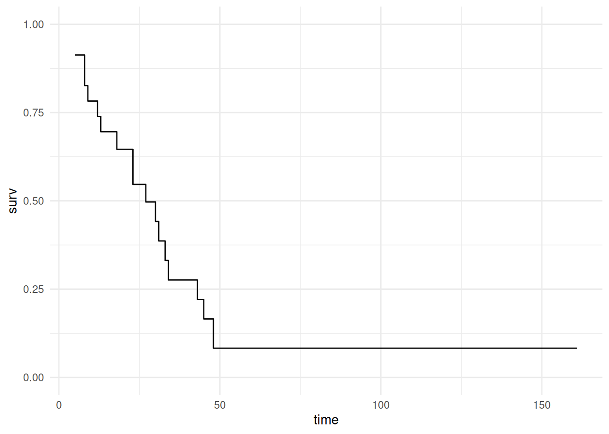
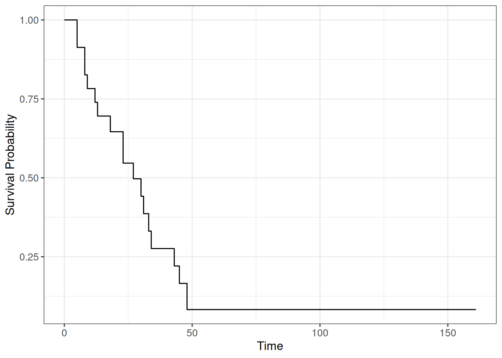
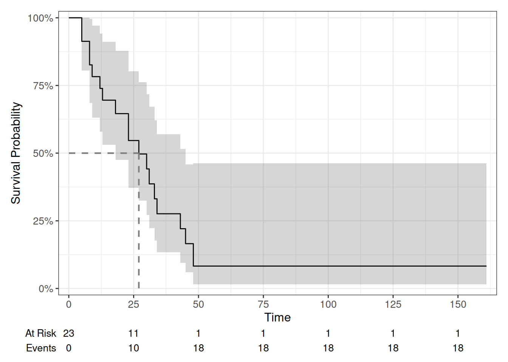
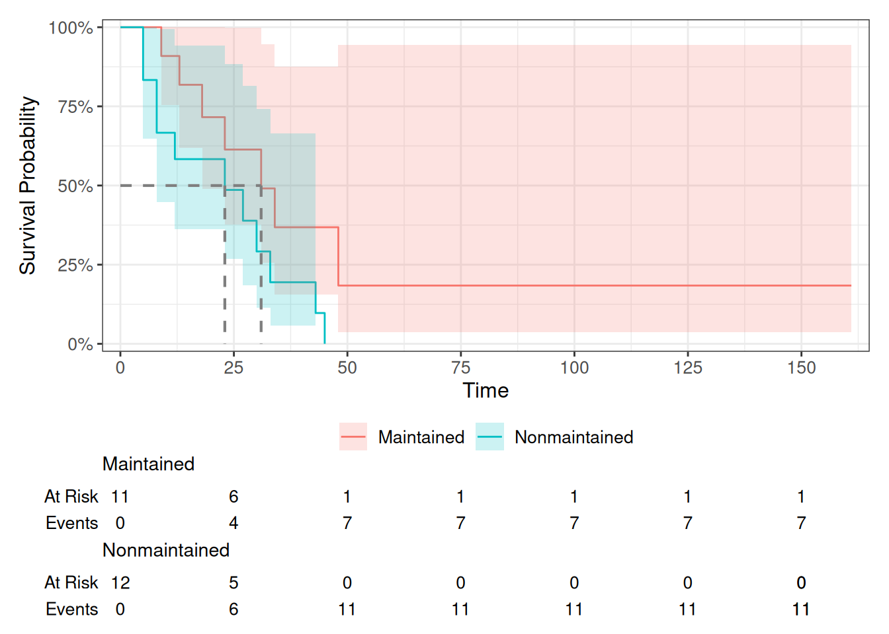

with(aml, Surv(time = time, event = status)) [1] 9 13 13+ 18 23 28+ 31 34 45+ 48 161+ 5 5 8 8
[16] 12 16+ 23 27 30 33 43 45 Turning time to event data into a ‘survival’ object witht he Surv() function.
with(aml, Surv(time = time, event = status)) [1] 9 13 13+ 18 23 28+ 31 34 45+ 48 161+ 5 5 8 8
[16] 12 16+ 23 27 30 33 43 45 Normally this is wrapped in another function. Here we use the survfit() function to fit a survival curve.
km <- survfit(Surv(time, status) ~ 1, data = aml) Gives us survival summary stats at various time points.
summary(km)Call: survfit(formula = Surv(time, status) ~ 1, data = aml)
time n.risk n.event survival std.err lower 95% CI upper 95% CI
5 23 2 0.9130 0.0588 0.8049 1.000
8 21 2 0.8261 0.0790 0.6848 0.996
9 19 1 0.7826 0.0860 0.6310 0.971
12 18 1 0.7391 0.0916 0.5798 0.942
13 17 1 0.6957 0.0959 0.5309 0.912
18 14 1 0.6460 0.1011 0.4753 0.878
23 13 2 0.5466 0.1073 0.3721 0.803
27 11 1 0.4969 0.1084 0.3240 0.762
30 9 1 0.4417 0.1095 0.2717 0.718
31 8 1 0.3865 0.1089 0.2225 0.671
33 7 1 0.3313 0.1064 0.1765 0.622
34 6 1 0.2761 0.1020 0.1338 0.569
43 5 1 0.2208 0.0954 0.0947 0.515
45 4 1 0.1656 0.0860 0.0598 0.458
48 2 1 0.0828 0.0727 0.0148 0.462We can specify a time point we care about, for example, 30-day survival.
summary(km, times = 30)Call: survfit(formula = Surv(time, status) ~ 1, data = aml)
time n.risk n.event survival std.err lower 95% CI upper 95% CI
30 9 12 0.442 0.11 0.272 0.718Plot a Kaplam-Meier curve
plot(km)
We can do this manually with ggplot2::geom_step()
km_df <- data.frame(
time = km$time,
surv = km$surv,
lower = km$lower,
upper = km$upper
)
ggplot(km_df, aes(x = time, y = surv)) +
geom_step() +
scale_y_continuous(limits = c(0, 1)) +
theme_minimal()
head(km_df) time surv lower upper
1 5 0.9130435 0.8048548 1.0000000
2 8 0.8260870 0.6848395 0.9964666
3 9 0.7826087 0.6309579 0.9707088
4 12 0.7391304 0.5797992 0.9422465
5 13 0.6956522 0.5308783 0.9115685
6 16 0.6956522 0.5308783 0.9115685Enhanced plot with {ggsurvfit}
Note: The survfit2() function.
survfit2(Surv(time, status) ~ 1, data = aml) |>
ggsurvfit()
survfit2(Surv(time, status) ~ 1, data = aml) |>
ggsurvfit() +
add_confidence_interval() +
add_risktable() +
add_quantile(y_value = 0.5, color = "gray50", linewidth = 0.75) +
scale_ggsurvfit()
Often we want to compare groups.
aml time status x
1 9 1 Maintained
2 13 1 Maintained
3 13 0 Maintained
4 18 1 Maintained
5 23 1 Maintained
6 28 0 Maintained
7 31 1 Maintained
8 34 1 Maintained
9 45 0 Maintained
10 48 1 Maintained
11 161 0 Maintained
12 5 1 Nonmaintained
13 5 1 Nonmaintained
14 8 1 Nonmaintained
15 8 1 Nonmaintained
16 12 1 Nonmaintained
17 16 0 Nonmaintained
18 23 1 Nonmaintained
19 27 1 Nonmaintained
20 30 1 Nonmaintained
21 33 1 Nonmaintained
22 43 1 Nonmaintained
23 45 1 Nonmaintainedsurvfit2(Surv(time, status) ~ x, data = aml) |>
ggsurvfit() +
add_confidence_interval() +
add_risktable() +
add_quantile(y_value = 0.5, color = "gray50", linewidth = 0.75) +
scale_ggsurvfit()
# Test whether survival differs between groups
logrank_test <- survdiff(Surv(time, status) ~ x, data = aml)
logrank_testCall:
survdiff(formula = Surv(time, status) ~ x, data = aml)
N Observed Expected (O-E)^2/E (O-E)^2/V
x=Maintained 11 7 10.69 1.27 3.4
x=Nonmaintained 12 11 7.31 1.86 3.4
Chisq= 3.4 on 1 degrees of freedom, p= 0.07